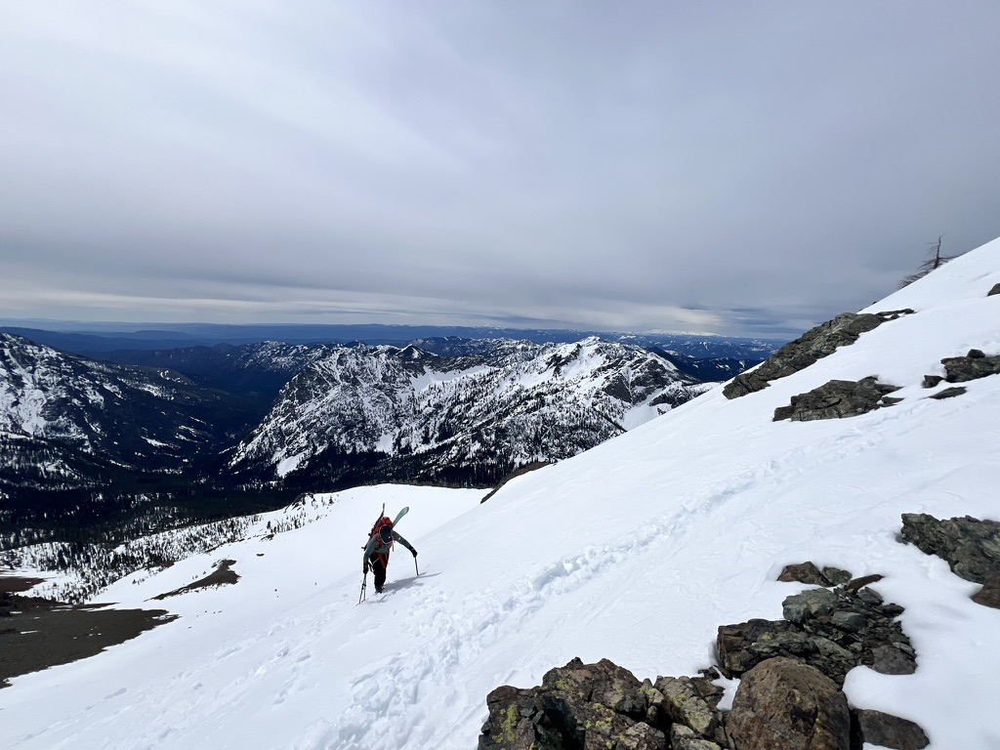
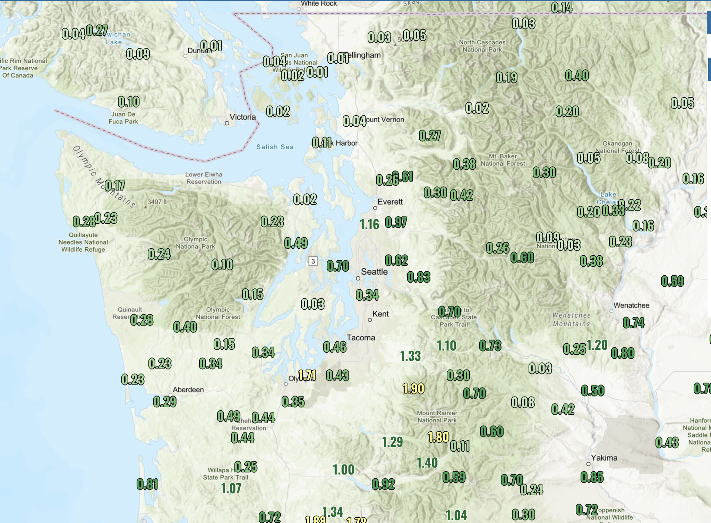
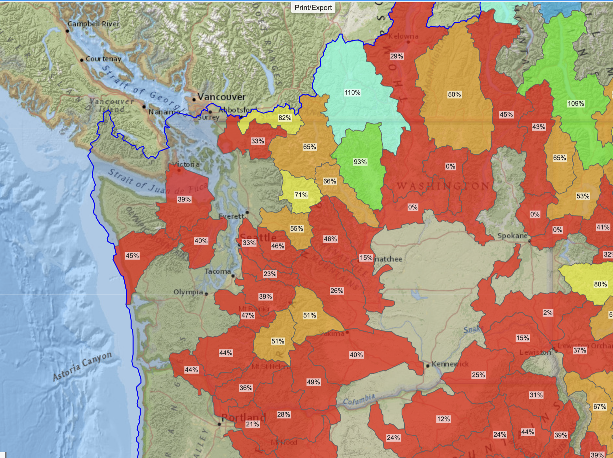
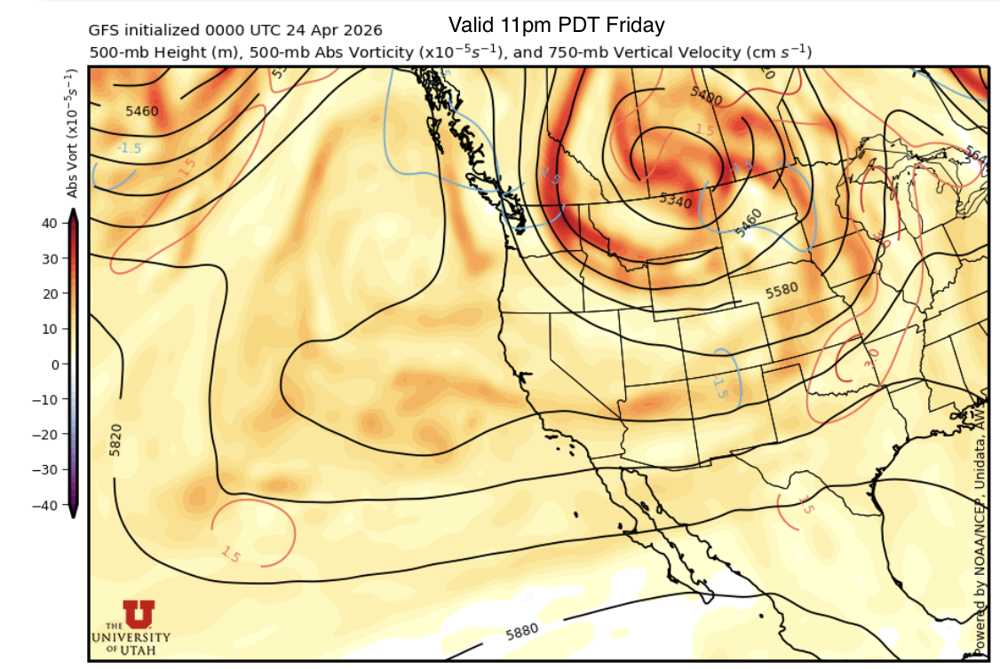
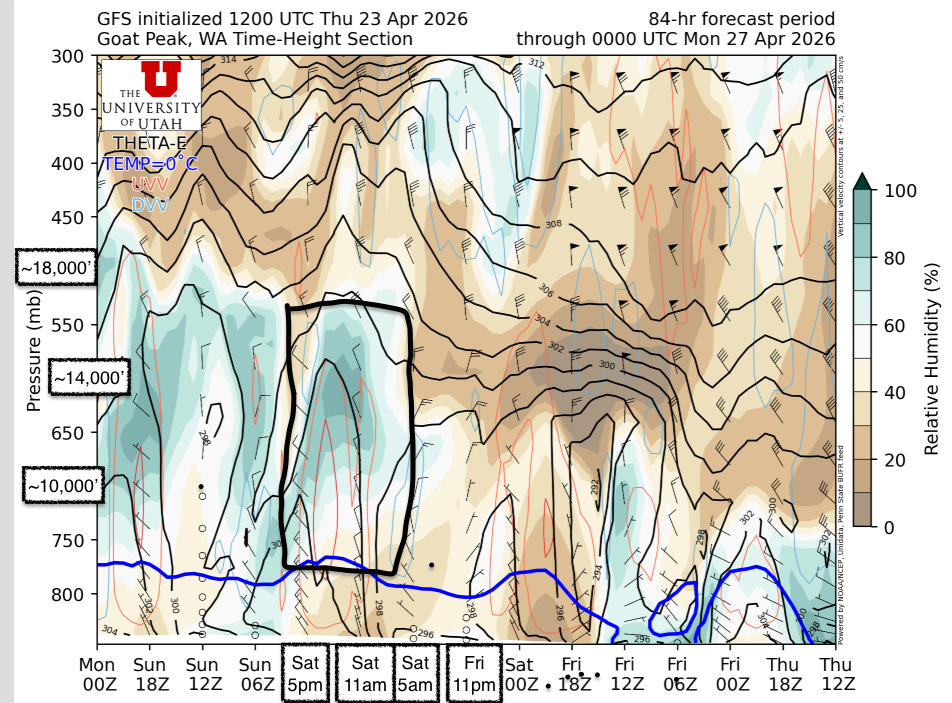
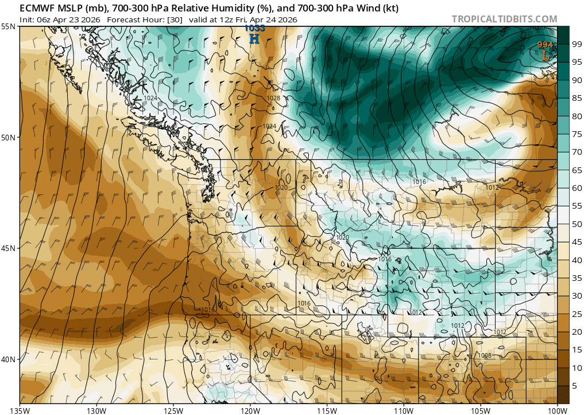
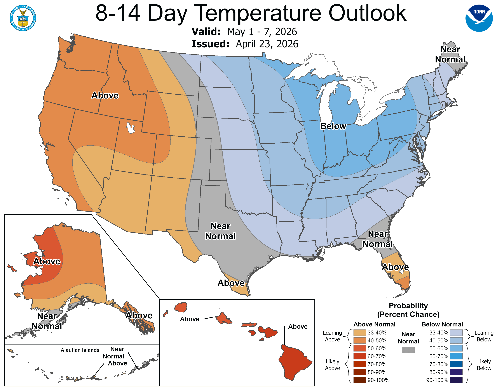

🚜 Spring corn is ripe for the harvest, if you know where to find it
Welcome to The Dendritic Growth Zone!
Past Week's Recap
Just like Danny described last week, this past week brought another round of Jekkll
and Hyde springtime weather. After last week's dreamy storm, things got hot and fast.
Friday through Sunday brought warm weather with freezing levels above 10,000' and
high clouds from a closed low spinning off the coast of Northern California. This made
for some tricky ski conditions given the significant new snow and warm temperatures.
  
Given this tricky conditions combo, myself and a couple friends of Cascade Mountain Weather, Ethan and Abby,
took a stoll out to the Teanaway. Since this region had not seen much significant snow like spots
near the cascade crest, we were delighted to find oodles of corn, ripe for the picking.
The start of the work week brought the closed low on shore to our south. Over the following few days,
dribs and drabs of precipitation wandered up from the South. Not the biggest or most intense storm
by any stretch of the imagination but still saw some half-decent precipitation totals in the Southern
half of the Washington Cascades, with the East side favored in some spots. Yakima saw almost double
the precipitation that Seattle received! High freezing levels near 5000-6000' limited any snowfall
to the highest elevations.
The state of the snowpack overall is quite bleak although we in Washington may somehow
have the most enviable snowpack in the Western US.
🧙♂️ Forecast Discussion
Short-term (Friday-Sunday)
As we start the weekend on this Thursday evening, we are riding the back side of a
broad and relatively weak upper level trough of low pressure that's been sticking
around the western US the past few days. As this original trough starts moving downstream,
a second upper level shortwave will roll in from British Columbia and the two will
join forces before stalling over Saskatchewan. As this bowling ball of atmospheric energy
and moisture stalls, we may see periods of dry, clear weather mixed with periods of cloud cover and
very light precipitation in the mountains.

Starting on Friday, we should stay high and dry with near-normal temperatures. This
should make for some good mountain peepin' (and ski line oogling for the Roman Wall or the Brothers) from the lowlands!
Things start getting a little more interesting (or complicated if you're trying to get up high in the mountains)
on Saturday. Our bowling ball low starts spreading out and an imbedded shortwave trough brushes by
in the afternoon into evening. Like a figure skater tucking in or reaching out their arms, as our low
spreads out, it loses strength so this shortwave will not be packing a punch at all. The main reason
we care is for the potential for mid level cloud cover as it rolls through.


Medium-Term (Monday-Wednesday)
The medium term forecast is quite unremarkable. As our bowling ball low moves on east, the PNW will see very weak upper-level flow doing a whole lot of nothing. Like classic spring PNW weather, we'll see periods of cloud cover here and there and maybe some drizzle or a few fluries. No significant precipitation is on the horizon. If you're keen on a mid week corn mission, Wednesday looks best as a very weak ridge of high pressure sets up. This should bring som drier air in from the south and limit cloud cover.
After that, things get a little more uncertain with highly variable temperature outlooks and disagreement in precipitation totals.🧙🔮🧙♂️ Reading the crystal ball - 7+ day outlook
We don't see too many signs for any significant storms in this outlook. Conditions will likely turn into classic springtime weather with a mix of sun and clouds with mild temerature, but not much in the way of significant precipitation.

❄️ Snowfall
Weekend Snow Accumulation Forecast
| Site | Through 4am Saturday | Through 4am Sunday | Weekend Snow Accumulation (4pm Thursday through 4am Monday 13 Apr) |
|---|---|---|---|
| Mt. Baker (4500') | 0-1" | 0-0" | 0-1" |
| Washington Pass | 0" | 0" | 0" |
| Stevens Pass (4500') | 0-1" | 0" | 0-1" |
| Hurricane Ridge | 0-1" | 0" | 0-1" |
| Blewett Pass | 0" | 0" | 0" |
| Snoqualmie Pass | 0" | 0" | 0" |
| Crystal (5000') | 0" | 0" | 0" |
| Paradise | 0" | 0-1" | 0-3" |
| White Pass (5000') | 0" | 0" | 0" |
🧊 Freezing Level
- Friday: 6000 feet
- Saturday: 6000 feet
- Sunday: 6000 feet
🎿 Our Recommendations
Best Choice This Weekend: Saturday corn, target Kulshan (Baker) or other North Cascades Objectives
Saturday presents the best window for scoring that sweet corn we all dream of. If you're hoping
to try a real big objective well above treeline or on glaciers, I'd try to target being out of
complex terrain by noon Saturday to prevent cloud problems. Of course, clouds in the mountains are
perhaps one of the hardest things to forecast so this could end up varying significantly by zone.
Paradise received over an inch of water mid-week with much of it falling as snow. Because of this,
I'm not so convinced that Tahoma, Loowit (Helens), or Pahto (Adams) will have enough time to corn
up by the weekend. The North Cascades, however, received significantly less precipitation so
this will be a much smaller/non-existant issue up north.
Runner-Up: Exploration 🧭
A major silver lining this spring is the historically early driving access to many trailheads. Mid-elevation trailheads (particularly on the east side) are melting out like it's early June. Perhaps this could be another great opportunity to take advantage of the unusual access to check out a new zone!
🚧👷Cascade Mountain Weather Updates👷🚧!
Patches are in! CMW hats will be on sale soon but in limited supply. Reach out if you're interested. We'll be selling them for $25.